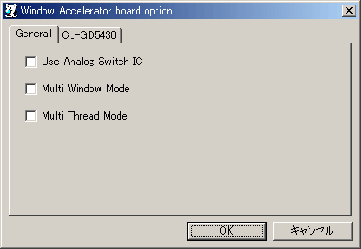

出力切り替えに電磁リレーではなくアナログスイッチICを使用します。リレー切替音が鳴らなくなる以外の差はありません。
ウィンドウアクセラレータを別窓で表示します。操作は不便ですがMulti Thread Modeと一緒に使うと若干高速に動作する場合があります。ここにチェックを入れるとウィンドウアクセラレータ動作中のフルスクリーンモードは使用できなくなります。
ウィンドウアクセラレータの描画処理に別スレッドを使います。メインスレッドの負荷が減るので、マルチコアなCPUの場合は高速化が期待できます。